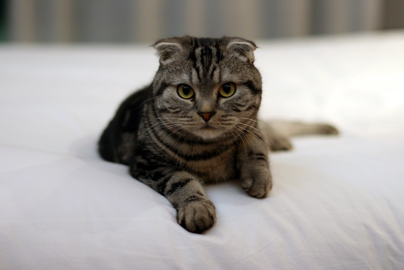
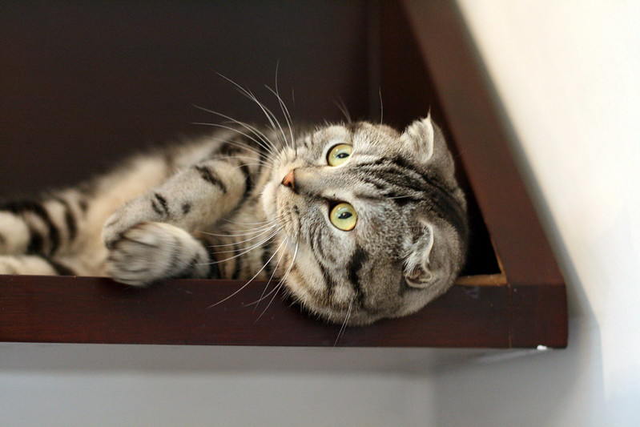
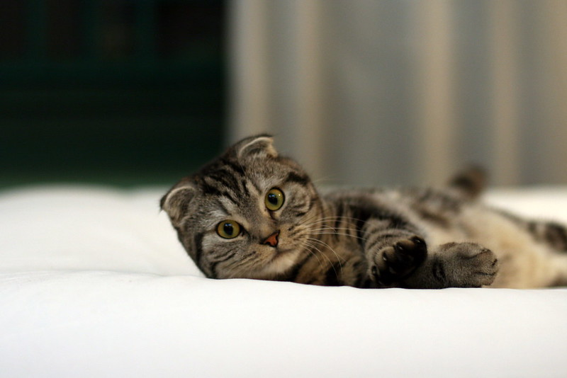

The Scottish Fold is a breed of domestic cat with a natural dominant gene mutation that affects cartilage throughout the body, causing the ears to "fold", bending forward and down towards the front of the head, which gives the cat what is often described as an "owl-like" appearance. Lilac-colored Scottish Fold kitten Originally called lop-eared or lops after the lop-eared rabbit, Scottish Fold became the breed's name in 1966.[1] Depending on registries, longhaired Scottish Folds are varyingly known as Highland Fold, Scottish Fold Longhair, Longhair Fold and Coupari.
  